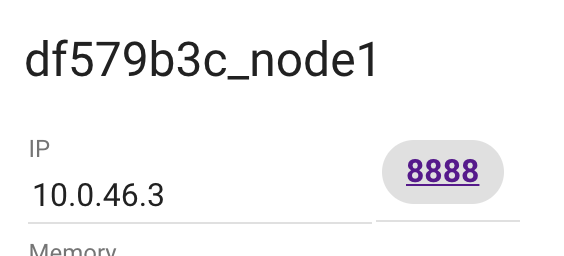

FROM rodrigosiviero/mvn-jdk-cscod as builder
ADD . /tmp/my-app/
WORKDIR /tmp/my-app/
RUN mvn package
FROM rodrigosiviero/mvn-jdk-cscod as sonar
COPY --from=builder /tmp/my-app/ /tmp/my-app/
WORKDIR /tmp/my-app/
RUN mvn sonar:sonar -Dsonar.host.url=http://192.168.1.38:9000
FROM tomcat:alpine as webcontainer
COPY --from=builder /tmp/my-app/target/my-app.war /usr/local/tomcat/webapps/my-app.war
Entre em http://play-witch-docker.com
Crio uma nova instância
Clone o repositório com a aplicação de exemplo
git clone https://cs-rodrigo-siviero@bitbucket.org/cs-rodrigo-siviero/helloworld-multistage.git
Crie o arquivo Dockerfile dentro da pasta do repositório clonado
Edite o Dockerfile com o seguinte:
FROM rodrigosiviero/mvn-jdk-cscod as builder
ADD . /tmp/my-app/
WORKDIR /tmp/my-app/
RUN mvn package
FROM tomcat:alpine as webcontainer
COPY --from=builder /tmp/my-app/target/my-app.war /usr/local/tomcat/webapps/my-app.war
Execute comando para buildar o Multi-stage Build
docker build -t meuapp-multi .
Execute o Container
docker run -d -p 8888:8080 meuapp-multi
Faça o teste clicando na porta 8888 na parte superior do play-with-docker
Adicione o path no final da url /my-app
https://docs.docker.com/engine/userguide/eng-image/multistage-build/
http://blog.arungupta.me/smaller-java-image-docker-multi-stage-build/
http://blog.alexellis.io/mutli-stage-docker-builds/